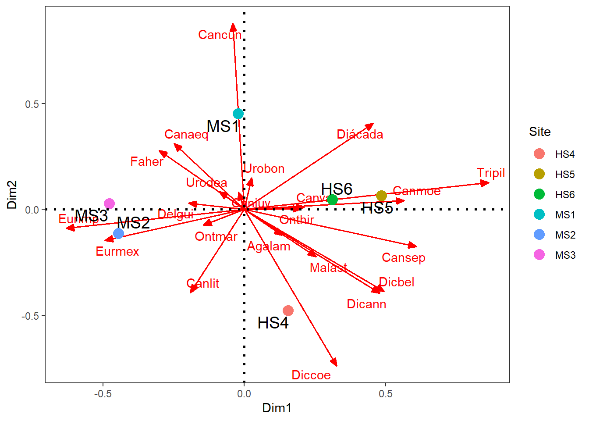
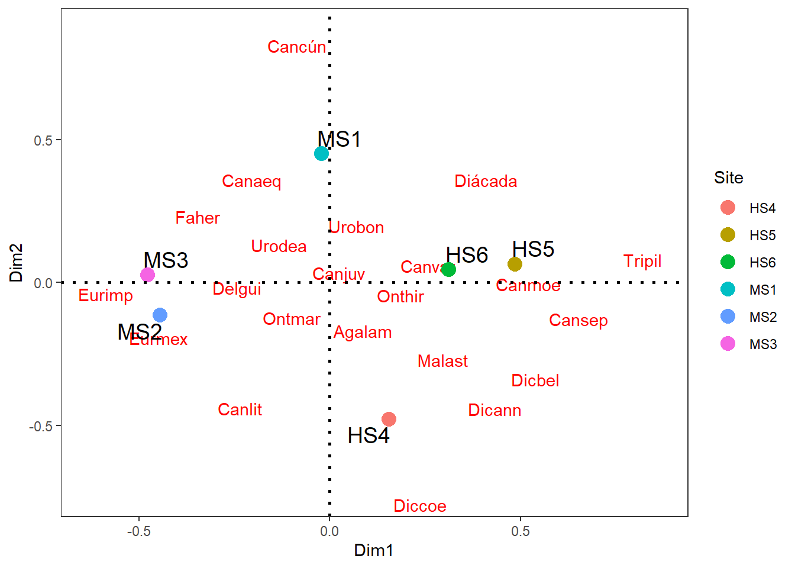
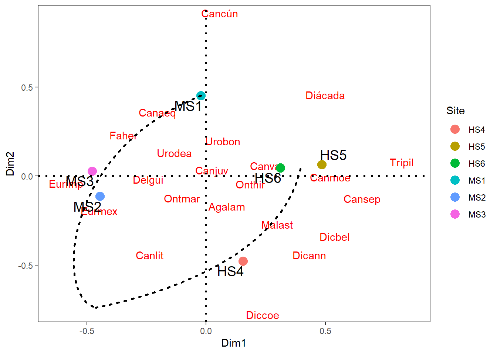
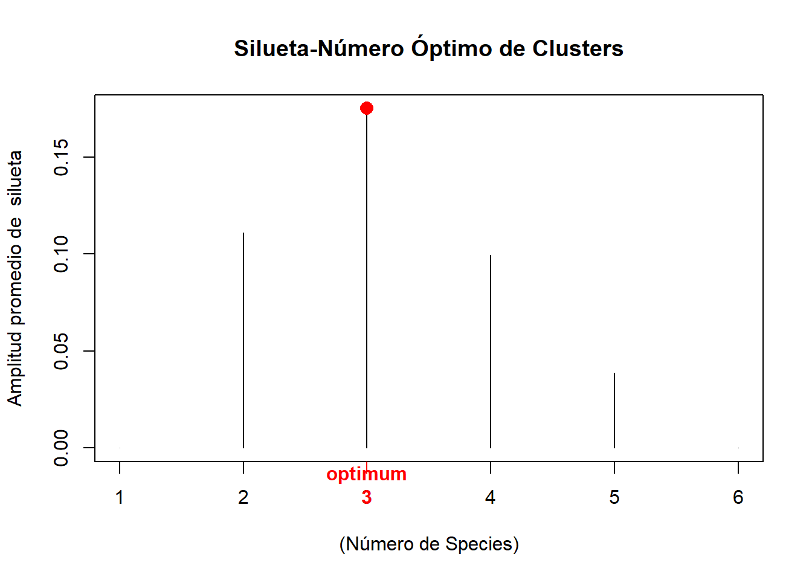
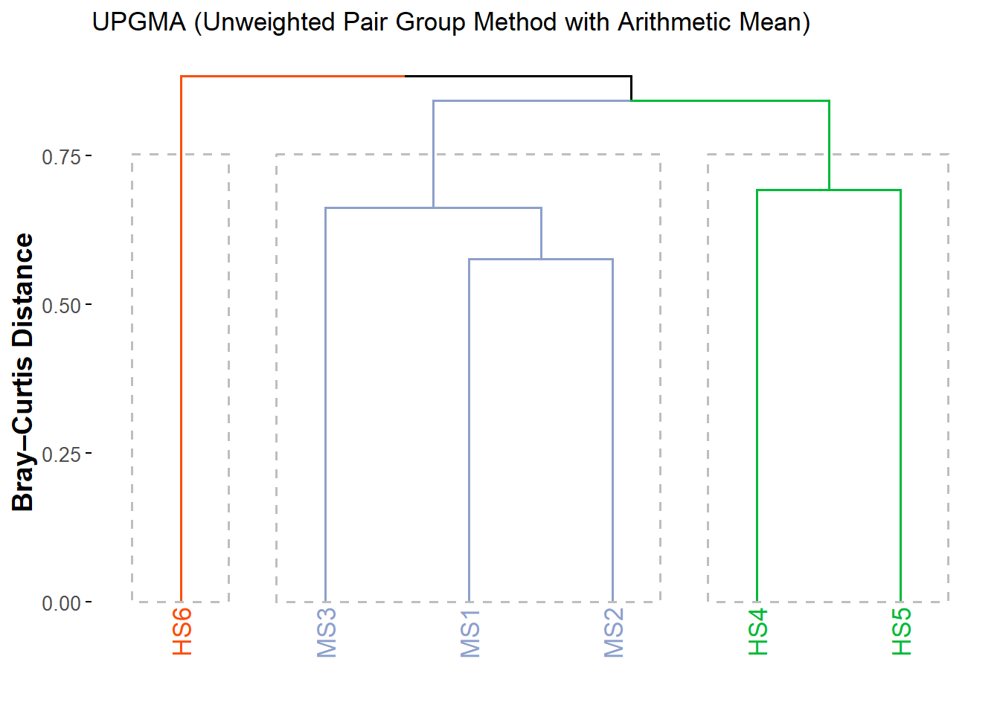
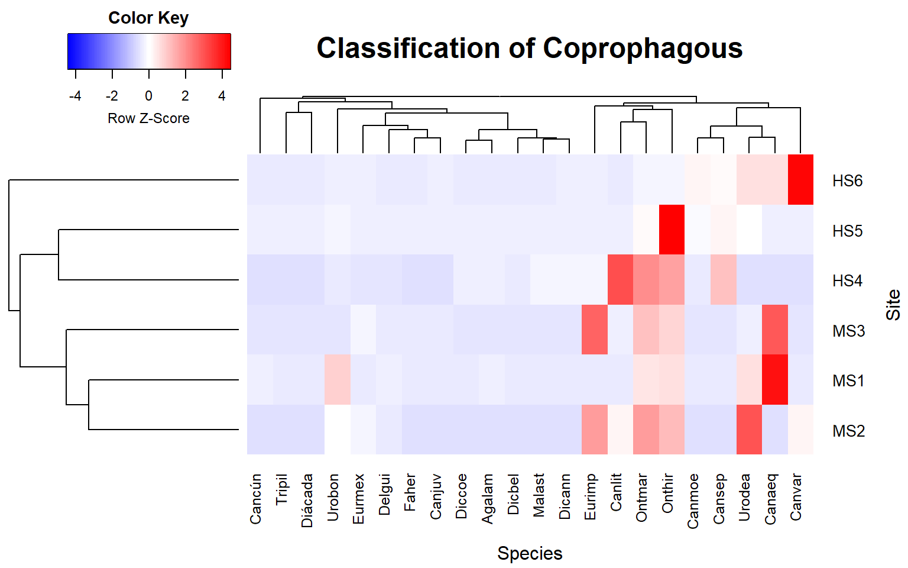

Cargar las librerías
Se requiere cargar las librerías para el análisis de diversidad alfa, gamma y beta, por descomposición de las escalas alfa y gamma.
Cargar la base de datos
Como el análisis de diversidad beta se realizará con datos de abundancia y de presencia-ausencia, inicialmente se requiere cargar la base de datos con valores de abundancia.
1. Escalamiento (NMDS)
Se utiliza la distancia Bray Curtis y el estrés generado es de 0.078 (8%), denotando una buena configuración de la ordenación para este análisis.
| NMDS1 | NMDS2 | Species | |
|---|---|---|---|
| Agalam | 0.1333753 | -0.1201587 | Agalam |
| Tripil | 0.8647899 | 0.1278258 | Tripil |
| Urobon | 0.0258403 | 0.1493697 | Urobon |
| Urodea | -0.0883043 | 0.0827485 | Urodea |
| Cancún | -0.0408453 | 0.8769539 | Cancún |
| Canmoe | 0.5655074 | 0.0424437 | Canmoe |
Las Figure 1 a Figure 3, muestran la ordenación con el NMDS de las especies de coprófagos y los sitios. Se presenta un gradiente unimodal o en herradura que separa a el paisaje MS (menor riqueaza) de BS (con mayor número de especies asociadas).



2. Análisis de Clúster (CLA)
Para seguir con la lógica del nmds, se usará la distancia Bray Curtis, para clasificar a los sitios, con base en la abundancia y composición de los 22 taxones de coprófagos.
Cargar Librerías
Se cargan las librerías requeridas para el análisis.
Paso 1. Distancia entre observaciones
Se aplicará la distancia Bray Curtis para las variables biológicas, dada la poca linealidad en sus relaciones.
Paso 2. Elección del método de agrupación de mayor ajuste
2.1 Cálculo de los siete dendogramas
2.2 Cálculo de las correlaciones cofenéticas
El método de agrupación UPGMA es el que presentó el mejor ajuste cofenético.
| Met | Cofen | |
|---|---|---|
| upgma | 3 | 0.871 |
| upgmc | 4 | 0.870 |
| compl | 2 | 0.818 |
| ward | 7 | 0.796 |
| simple | 1 | 0.769 |
| wpgma | 5 | 0.447 |
| wpgmc | 6 | 0.428 |
Paso 3. Número de Species formados
3.1 Método de silueta
Esta ténica muestra que la mayor amplitud se presenta en la formación de tres grupos, conglomerados o clúster, que reunen a los sitios clasificados.
[1] 3
Silueta-Número óptimo de Clusters k= 3
Con una aplitud promedio de silueta 0.1749698 3.3 Dendograma jerárquico final
Dendograma generado con el método upgma, la distancia Bray y los tres grupos formados.

Paso 4. Aporte de las variables a la clasificación
En rojo se identifica a los Species taxonómicos que por su patrón de Abundancia, aportan a la clasificación de los sitios.
